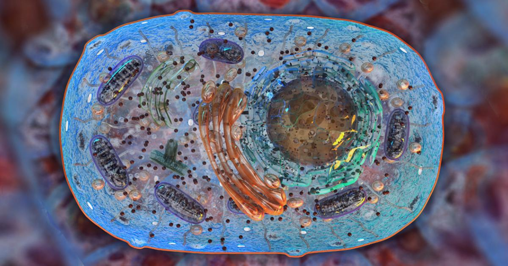
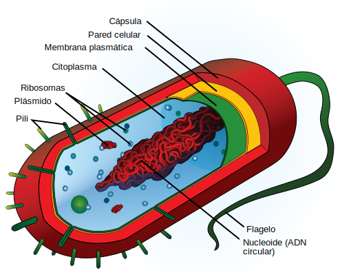
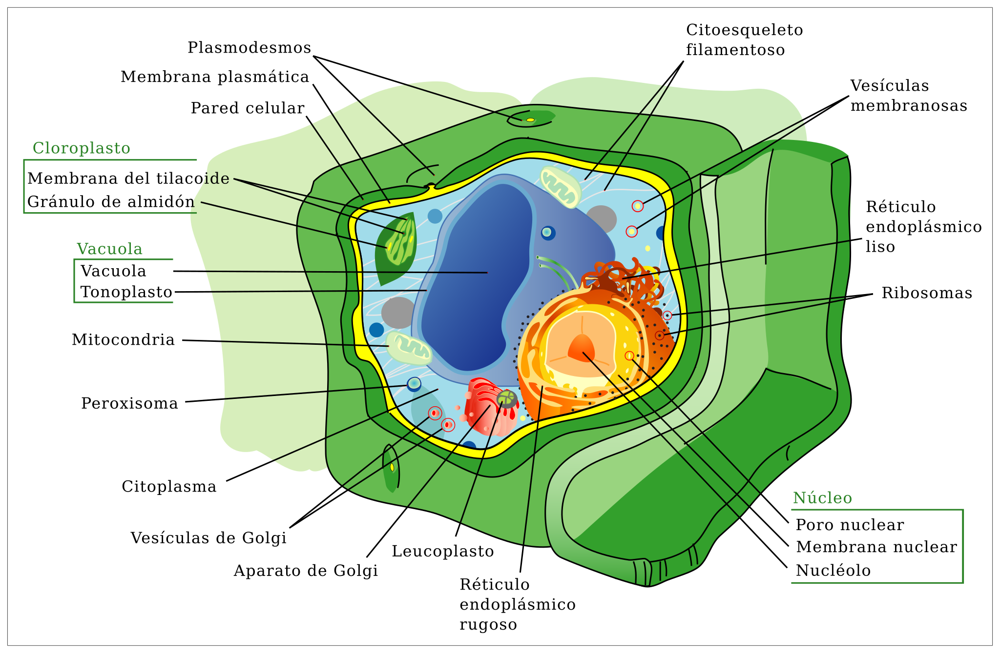
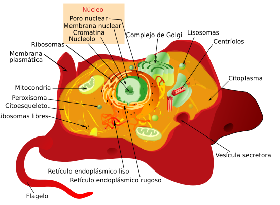
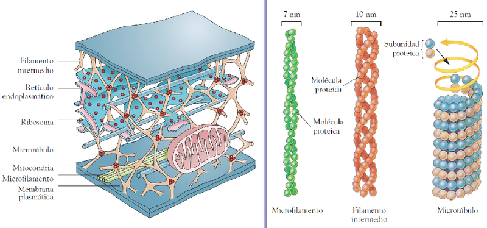

Organelos

Del mismo modo que el cuerpo humano tiene organos especializados que realizan ciertas funciones vitales, como los pulmones o el corazón, cada célula se comopone de organelos que realizan las funciones esenciales de la célula
Hay muchos organelos en una célula, cada uno cumple una función:
Núcleo: Transcribe la información del ADN en el ARN; donde se especifica la síntesis de las proteínas celulares
Nucleolo: Lugar de síntesis del ARN ribosómico y de ensamblaje de las subunidades ribosómicas
Membrana Plasmática: Encierra el contenido celular; regula el de materiales dentro y fuera de la célula; ayuda a mantener la forma de la célula; se comunica con otras células
Ribosomas: Sintetiza polipéptidos tanto en procariotas como en eucariotas
Retículo endoplásmico rugoso: Fabricación de proteínas
Retículo endoplásmico liso: Síntesis de lípidos; destoxificación de proteínas; almacenamiento de iones de calcio
Lisosomas: Contienen enzimas que degradan diferentes materiales ingeridos, así como orgánulos y proteínas deteriorados o que ya no se necesitan
Vacuolas: Almacenan materiales, residuos, agua; mantienen la presión hidrostática
Perixosomas: Lugar en el que ocurren muchas reacciones metabólicas diversas; por ejemplo, degradación de ácidos grasos
Mitocondrias: Lugar donde ocurre la mayoría de las reacciones de la respiración celular; transformación de la energía que procede de la glucosa o de lípidos en energía de ATP
Cloroplastos: Los cloroplastos son los lugares donde se realiza la fotosíntesis; la clorofila captura la energía de la luz; se forma ATP y otros compuestos ricos en energía que se utilizan para convertir el CO2 en carbohidratos
Cilios: Permiten el movimiento de algunos organismos unicelulares; tapizan algunos tejidos y contribuyen en mover materiales sobre su superficie; son importantes en la señalización celular
Flagelos: Permiten la locomoción de células espermatozoides y de algunos organismos unicelulares
CÉLULA PROCARIOTA

CÉLULA EUCARIOTA
Célula Vegetal

Célula Animal

EL CITOESQUELETO
Para que las células sean más que un caldo de organelos, es necesario que tenga una estructura rígida que le de soporte: el citoesqueleto. El citoesqueleto tiene 4 funciones:
- le da forma a la célula
- la ayuda a moverse
- le permite adherirse a otras células
- permite el desplazamiento de los materiales en su interior
El citoesqueleto puede presentarse en varias formas: microtúbulos, filamentos intermedios y microfilamentos.Los microtúbulos son los más grandes y están hechos de tubulina; los filamentos intermedios son más pequeños y también de tubulina; los microfilamentos son similares en tamaño a los filamentos intermedios pero están hechos de actina.
Los centriolos están hechos de microtúbulos, que forman parte del citoesqueleto. Sirven para dividir el ADN y se duplican en la division celular.
